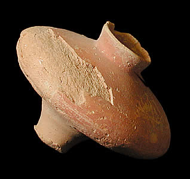

Type D
This is an unusual pot. Although pots of this shape are found at Indus Valley sites, they are not common. It is unclear what a pot like this might have been used for. However, a long base like this suggests that this pot would have either been placed in a stand or pushed into the ground as it does not stand up on its own base. This type of pot was probably made on a potter's wheel using fine clay. Some of the red paint which was originally used to decorate the pot can still be seen on the pot. However, the pot was probably never decorated with a design as no black paint can be seen on the surface. |